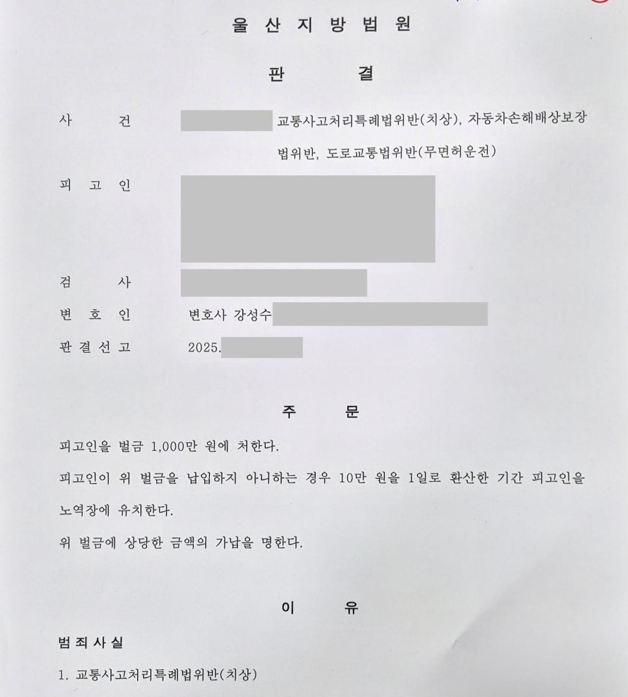

핵심 결과
음주운전 집행유예 기간 중 다시 무면허운전을 했고, 교통사고로 피해자 상해까지 발생한 사건이었습니다.
검찰은 교통사고처리특례법위반(치상), 자동차손해배상보장법위반, 도로교통법위반(무면허운전)을 함께 문제 삼았습니다.
실형 가능성이 매우 높았지만, 법무법인 우린은 피해 회복 과정과 재범 방지 자료를 정리해 벌금 1,000만 원을 이끌어냈습니다.
| 구분 | 내용 |
|---|---|
| 사건 분야 | 무면허운전, 교통사고 치상, 자동차손해배상보장법위반 |
| 불리한 사정 | 음주운전 집행유예 기간 중 재범 |
| 추가 위험 | 무면허 상태에서 사고 발생, 피해자 상해 |
| 주요 대응 | 피해 회복, 진정성 있는 사과 과정 정리, 재범 방지 자료 제출 |
| 최종 결과 | 벌금 1,000만 원 |
사건 개요
의뢰인이 처음 찾아왔을 때 상황은 매우 좋지 않았습니다.
이미 음주운전으로 집행유예 선고를 받은 상태였습니다.
그런데 1년도 지나지 않아 무면허 상태로 운전대를 잡았고, 상대방 차량을 들이받아 피해자에게 상해까지 입힌 사건이었습니다.
검찰은 세 가지 혐의를 함께 적용했습니다.
- 교통사고처리특례법위반(치상)
- 자동차손해배상보장법위반
- 도로교통법위반(무면허운전)
법원 입장에서는 매우 엄하게 볼 수밖에 없는 구조였습니다.
이미 한 번 선처를 받았는데도 다시 법을 어겼고, 단순 운전이 아니라 사고와 상해까지 발생했기 때문입니다.
실형 위험이 컸던 이유
- 음주운전 집행유예 기간 중이었습니다.
- 면허 없이 운전했습니다.
- 교통사고가 발생했습니다.
- 피해자에게 상해가 발생했습니다.
- 같은 교통 범죄로 재범 위험성이 크게 보일 수 있었습니다.
이런 사건은 단순히 반성문 몇 장으로 끝내기 어렵습니다.
해결 전략
1. 피해 회복 과정을 구체적으로 정리했습니다
형사재판에서 합의 자체도 중요하지만, 그 과정이 더 중요하게 평가될 때가 많습니다.
단순히 “합의했습니다”라고 적는 것으로는 부족합니다.
피해자에게 어떻게 사과했는지, 어떤 태도로 피해 회복을 진행했는지, 왜 진정성 있는 반성으로 볼 수 있는지를 구체적으로 정리했습니다.
2. 운전 경위를 핑계가 아닌 맥락으로 설명했습니다
무면허운전 자체를 정당화할 수는 없습니다.
다만 법원은 사건이 발생한 전체 흐름을 함께 봅니다.
의뢰인이 왜 운전대를 잡게 되었는지, 악의적으로 법을 무시한 사안인지, 생계와 생활 환경상 어떤 사정이 있었는지를 정리했습니다.
핵심은 변명이 아니라, 재판부가 납득할 수 있는 사실관계의 정리였습니다.
3. 재범 방지 계획을 말이 아닌 자료로 만들었습니다
“다시는 안 하겠습니다”라는 말만으로는 부족합니다.
교통안전교육 이수, 생활 환경 변화, 운전을 반복하지 않기 위한 구조적 조치 등을 자료로 정리했습니다.
재판부가 볼 때 “이번에는 실제로 달라질 가능성이 있다”고 판단할 수 있도록 준비했습니다.
| 대응 항목 | 준비한 내용 |
|---|---|
| 피해 회복 | 피해자와의 합의 및 사과 과정 정리 |
| 반성 자료 | 형식적 반성문이 아닌 사건 경위와 생활 변화 자료 |
| 재범 방지 | 교통안전교육, 운전 차단 계획, 생활 환경 개선 |
| 양형 주장 | 실형보다 사회 내 교정이 적절하다는 점 강조 |
| 변론 방향 | 집행유예 중 사건이라는 불리함을 정면으로 관리 |
결과
재판부는 집행유예 기간 중 발생한 범행이라는 점을 가볍게 보지 않았습니다.
무면허운전뿐 아니라 사고와 상해가 함께 발생했다는 점도 불리했습니다.
하지만 피해 회복이 이루어진 점, 반성 태도, 재범 방지 노력이 구체적으로 제출된 점이 함께 고려되었습니다.
최종적으로 실형이 아닌 벌금 1,000만 원이 선고되었습니다.
최종 결과
음주운전 집행유예 기간 중 무면허운전으로 사고를 낸 사건에서 벌금 1,000만 원이 선고되었습니다.
의뢰인은 집행유예 취소와 구속 위험을 피하고, 다시 사회 안에서 생활할 기회를 얻었습니다.
집행유예 중 무면허 사고에서 중요한 점
집행유예 기간 중 다시 형사사건이 발생하면 위험도가 크게 올라갑니다.
특히 무면허운전과 교통사고가 함께 있으면, 법원은 재범 위험성을 매우 중요하게 봅니다.
이때 필요한 것은 단순한 선처 호소가 아닙니다.
피해 회복, 사고 경위, 재범 방지 계획, 생활 환경 변화가 하나의 흐름으로 정리되어야 합니다.
같은 합의서와 같은 반성문이라도, 어떤 구조로 제출하느냐에 따라 결과는 달라질 수 있습니다.
결론
집행유예 중 무면허 교통사고 사건은 가볍게 볼 수 없습니다.
실형 가능성이 실제로 존재하는 사건입니다.
하지만 피해 회복과 재범 방지 자료를 제대로 준비하면, 벌금형 가능성을 검토할 수 있습니다.
사무장·상담실장 없이 변호사가 직접 상담합니다
법무법인 우린은 강성수 변호사가 직접 상담하고, 기록 검토부터 서면 작성, 재판 변론까지 직접 진행합니다.
집행유예 중 사건이라고 해서 무조건 포기할 필요는 없습니다.
먼저 사건 기록과 현재 상황을 정확히 확인해야 합니다.
이 글은 일반적인 법률 정보 제공을 위한 자료이며, 개별 사건의 결과를 보장하지 않습니다. 구체적인 대응은 사실관계와 증거에 따라 달라질 수 있습니다.